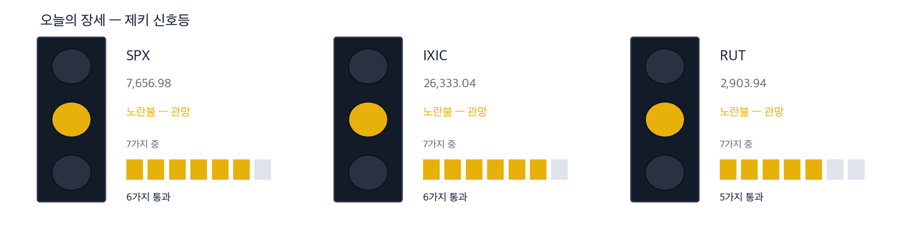
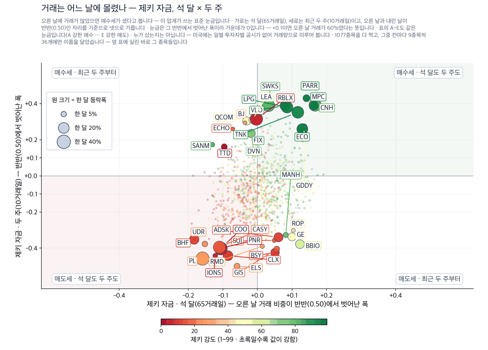
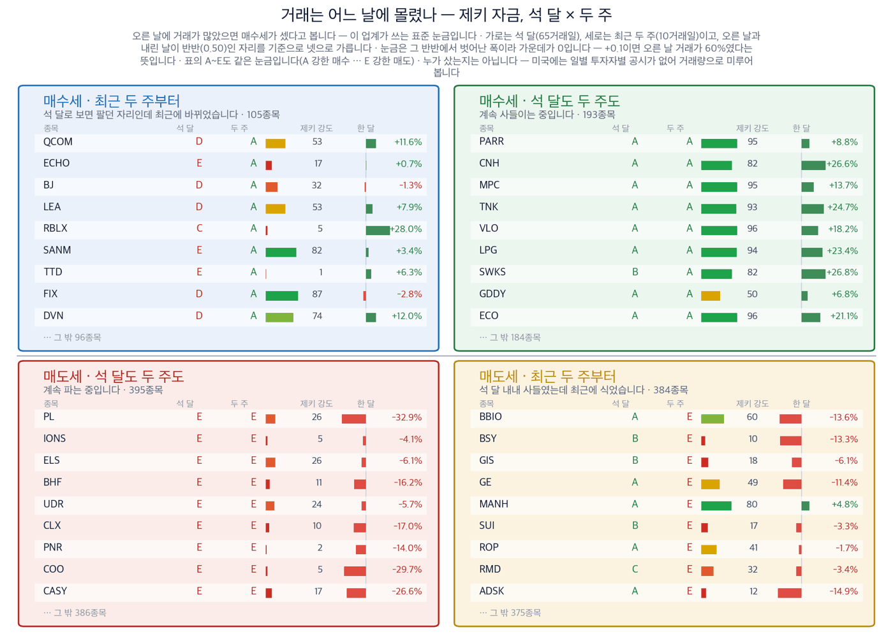
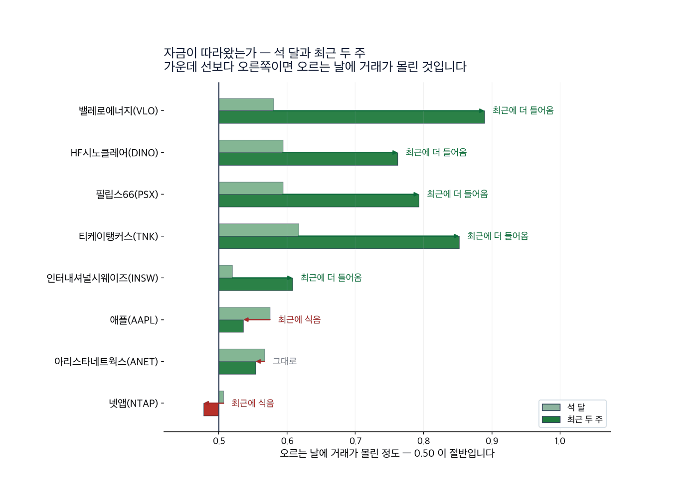

유가 100달러, 오른 쪽은 원유가 아니라 정유와 유조선이었습니다
ZekiRex 미국 브리핑 · 2026년 9월 12일 토요일 · 종가는 9월 11일 기준
다우 52,573.29 | 나스닥 26,333.04 | 10년물 국채 4.975% | 서부텍사스유 100.31달러 | 제키 신호등 노란불 |

이 그림 읽는 법
| 켜진 등 | 오늘의 국면입니다. 초록은 매수 우위, 노랑은 관망, 빨강은 매수 자제입니다. |
| 채워진 칸 | 7가지 조건 중 몇 개를 통과했는지입니다. 칸이 많이 찰수록 시장 구조가 튼튼합니다. |
| 칸이 다 찼는데 노랑·빨강이면 | 다른 이유로 한 단계 낮춘 것입니다. 그림 아래에 그 이유를 적었습니다. |
초록불은 사는 쪽이 유리한 장, 노란불은 관망할 장, 빨간불은 새로 사지 않을 장입니다. 오늘은 다우존스산업평균·나스닥·러셀2000이 모두 노란불입니다.
1. 원유가 아니라 기름제품이 모자랍니다.
사우디아라비아가 동서 송유관을 닫았습니다. 하루 700만 배럴을 나르던 길입니다. 후티 반군은 바브엘만데브 해협의 섬과 해안 도시를 차지했습니다. (월스트리트저널 9월 12일자 국제면) 그런데 값이 오른 쪽은 원유를 캐는 회사가 아니었습니다. 원유를 경유와 휘발유로 바꾸는 정유사, 그리고 그것을 실어 나르는 유조선사였습니다. 엑슨모빌은 한 달 동안 3.9% 오르는 데 그쳤습니다. 같은 기간 밸레로에너지는 18.2%, HF시노클레어는 22.6% 올랐습니다.
2. 금리를 올려도 주가가 올랐습니다.
8월 소비자물가가 1년 전보다 3.4% 올랐습니다. 7월과 같은 속도입니다. 연방준비제도가 9월 16일에 금리를 올릴 확률은 87%로 계산됩니다. 한 주 전에는 59%였습니다. (IBD 9월 11일자) 그런데도 금요일에 주가는 올랐습니다. 올릴지 말지를 두고 흔들리던 자리가 정리됐기 때문입니다.
3. 통신장비는 제외했습니다.
인공지능 데이터센터에 돈이 몰린다는 기사가 금요일에도 여러 건 나왔습니다. 아리스타네트웍스는 금요일 하루에 5.6%, 넷앱은 8.5% 올랐습니다. 그런데 두 회사 모두 한 달로 보면 값이 내려 있습니다. 하루 반등과 한 달 추세가 어긋나는 자리라 오늘은 종목으로 올리지 않았습니다.
그래서 어떻게 하나: 오늘 새로 볼 곳은 정유와 유조선입니다. 다만 이번 주 수요일 금리 결정 전까지는 노란불이 그대로입니다.
먼저, 이번 주 경제
| 날짜 | 무엇을 보는가 | 넘으면 어떻게 되는가 |
|---|
| 9월 15일 화요일 | 뉴욕주 제조업 경기지수 | 경기가 꺾이는 쪽으로 나오면 금리 인상 부담이 커집니다 |
| 9월 16일 수요일 | 연방공개시장위원회 금리 결정, 8월 소매판매 | 0.25%p 인상이 이미 값에 들어가 있습니다. 시장이 보는 것은 케빈 워시 의장의 발언입니다 |
| 9월 18일 금요일 | 선물·옵션 동시 만기일, 보먼 이사 발언 | 만기일에는 방향과 무관한 거래가 늘어 종가가 흔들립니다 |
실적 발표는 이번 주에 드뭅니다. 인공지능 설비업체 포전트파워솔루션과 주택건설업체 레나가 예정돼 있습니다.
왜 그런가
테마와 종목 — 값이 실제로 따라온 곳만 남겼습니다
테마 1. 막힌 것은 원유가 아니라 기름제품입니다
국제에너지기구는 올해 세계 석유 수요 전망을 하루 250만 배럴 낮췄습니다. 수요 전망이 낮아졌는데 값은 올랐습니다. 공급이 더 빨리 막혔기 때문입니다. 막힌 곳은 원유를 실어 나르는 길과 정제 설비 쪽입니다. 그래서 모자란 것은 원유 자체가 아니라 경유·휘발유 같은 기름제품입니다. 정유사는 원유를 사서 기름제품을 팝니다. 둘의 값 차이가 정제 마진입니다. 원유보다 기름제품이 더 귀해지면 그 차이가 넓어집니다.
아래에서 철회 기준으로 적은 값은 모두 9월 11일 종가보다 8% 낮은 자리입니다. 저희가 종목마다 같은 방식으로 잡는 선입니다.
테마 1 · 정유 밸레로에너지(VLO) 월스트리트저널 9월 12일자 국제면·경제면 종가 390.42달러 | 당일 +1.3% | 한 달 +18.2% | 석 달 +52.7% | 제키 강도 95 | 52주 최고 종가 대비 +0.0% |
| 누가 | 미국에서 정제 능력이 가장 큰 정유사입니다. | | 무엇을 | 원유를 사서 경유와 휘발유로 바꿔 팝니다. 정제 마진이 이 회사의 수익입니다. | | 언제 | 9월 11일 종가 390.42달러로, 52주 가운데 가장 높은 종가입니다. | | 어디서 | 멕시코만 연안과 중서부에 정제 설비가 몰려 있습니다. | | 왜 | 바닷길과 송유관이 막히면 원유보다 기름제품이 먼저 모자라집니다. 그 차이를 가져가는 쪽이 정유사입니다. | | 어떻게 | 한 달 18.2%, 석 달 52.7% 올랐습니다. 제키 강도는 95입니다. 오른 날에 거래가 몰린 정도를 재는 제키 자금은 석 달과 최근 2주 모두 A등급입니다. |
정리하면 — 값과 거래가 함께 올랐고 52주 최고 종가 자리를 지켰습니다. 저희 기준 4가지를 모두 넘습니다.
확인 신호 — 9월 11일 종가인 390.42달러 위에서 이번 주를 마치는 것입니다.
철회 기준 — 9월 11일 기준으로 잡은 359달러가 무너지는 것입니다. 정제 마진이 좁아졌다는 뜻이 됩니다. |
테마 1 · 정유 HF시노클레어(DINO) 월스트리트저널 9월 12일자 국제면 종가 107.84달러 | 당일 +0.1% | 한 달 +22.6% | 석 달 +54.3% | 제키 강도 95 | 52주 최고 종가 대비 −0.4% |
| 누가 | 미국 내륙과 서부에 정제 설비를 둔 중형 정유사입니다. | | 무엇을 | 원유를 기름제품으로 바꿔 팔고, 윤활유도 함께 만듭니다. | | 언제 | 9월 11일 종가 107.84달러로, 52주 최고 종가에서 0.4% 아래입니다. | | 어디서 | 로키산맥과 중서부 지역에서 정제합니다. 내륙 원유를 싸게 받습니다. | | 왜 | 내륙 원유는 바닷길 사고에 값이 덜 오릅니다. 반대로 기름제품 값은 함께 오르므로 마진이 더 넓어집니다. | | 어떻게 | 한 달 22.6% 올라 정유업에서 오름폭이 가장 큽니다. 제키 강도 95, 제키 자금은 석 달과 최근 2주 모두 A등급입니다. |
정리하면 — 내륙 정제라는 자리 때문에 같은 업종 안에서도 오름폭이 컸습니다.
확인 신호 — 9월 8일 종가인 108.31달러를 넘어서 마치는 것입니다.
철회 기준 — 9월 11일 기준으로 잡은 99달러가 무너지는 것입니다. |
필립스66(PSX)도 같은 자리에 있습니다. 9월 11일 종가는 259.47달러이고 52주 최고 종가에서 0.5% 아래입니다. 한 달 15.0%, 석 달 45.7% 올랐고 제키 강도는 93입니다. 앞의 2곳과 근거가 같아 따로 떼어 적지 않았습니다. 확인 신호는 9월 9일 종가인 260.78달러를 넘어서 마치는 것이고, 철회 기준은 9월 11일 기준으로 잡은 239달러가 무너지는 것입니다.
테마 2. 뱃길이 막히면 운임을 받는 쪽이 있습니다
바브엘만데브 해협은 홍해로 들어가는 입구입니다. 이 길이 막히면 배는 아프리카를 돌아갑니다. 항해 거리가 길어집니다. 같은 화물을 나르는 데 배가 더 오래 묶이므로 쓸 수 있는 배가 줄어듭니다. 유조선 운임은 그렇게 오릅니다. 원유값이 내려도 이 효과는 남습니다.
테마 2 · 유조선 티케이탱커스(TNK) 월스트리트저널 9월 12일자 국제면 종가 100.83달러 | 당일 +2.6% | 한 달 +24.7% | 석 달 +39.1% | 제키 강도 93 | 52주 최고 종가 대비 +0.0% |
| 누가 | 중형 원유 운반선을 운영하는 해운사입니다. | | 무엇을 | 정해진 노선 없이 그때그때 운임으로 배를 빌려줍니다. 운임이 오르면 그대로 수익이 됩니다. | | 언제 | 9월 11일 종가 100.83달러로, 52주 가운데 가장 높은 종가입니다. 당일 2.6% 올랐습니다. | | 어디서 | 중동과 대서양을 오가는 항로에 배가 걸려 있습니다. | | 왜 | 해협이 막혀 항해 거리가 길어지면 쓸 수 있는 배가 줄어듭니다. 배가 귀해지면 운임이 오릅니다. | | 어떻게 | 한 주 9.8%, 한 달 24.7% 올랐습니다. 제키 강도 93이고 제키 자금은 A등급입니다. 9월 11일 거래량은 50일 평균의 1.83배였습니다. |
정리하면 — 값과 거래가 함께 늘었습니다. 저희 기준 4가지를 모두 넘습니다.
확인 신호 — 9월 11일 종가인 100.83달러 위에서 이번 주를 마치는 것입니다.
철회 기준 — 9월 11일 기준으로 잡은 92.8달러가 무너지는 것입니다. 해협이 다시 열렸다는 뜻이 됩니다. |
인터내셔널시웨이즈(INSW)는 같은 이야기에 걸리지만 근거가 한 칸 얇습니다. 9월 11일 종가 103.65달러, 한 달 12.2%, 제키 강도 94입니다. 거래량은 50일 평균의 1.92배로 늘었는데, 석 달로 본 제키 자금이 C등급에 머물러 있습니다. 최근 2주만 A등급으로 돌아섰습니다. 확인 신호는 석 달 등급이 B 위로 올라오는 것이고, 철회 기준은 9월 11일 기준으로 잡은 95달러가 무너지는 것입니다.
테마 3. 접는 휴대전화가 실제로 팔리는지가 남았습니다
애플이 9월 9일 수요일에 새 휴대전화를 내놓았습니다. 접으면 전화기, 펴면 태블릿이 되는 제품이 함께 나왔습니다. 월스트리트저널은 9월 12일자에서 직접 써 본 소감을 실었습니다. 값은 공개 당일에 내렸다가 그 주에 되올랐습니다.
테마 3 · 휴대전화 애플(AAPL) 월스트리트저널 9월 12일자 경제면 종가 332.27달러 | 당일 +1.7% | 한 달 +9.9% | 석 달 +12.4% | 제키 강도 77 | 52주 최고 종가 대비 −2.3% |
| 누가 | 세계에서 가장 큰 휴대전화 제조사입니다. | | 무엇을 | 접는 형태의 새 제품을 이번 주에 공개했습니다. | | 언제 | 9월 9일에 공개했고 9월 11일 종가는 332.27달러입니다. | | 어디서 | 부품은 아시아에서 만들고 제품은 전 세계에서 팝니다. | | 왜 | 새 형태가 팔리면 한 대당 받는 값이 올라갑니다. 안 팔리면 부품값만 더 들어간 제품이 됩니다. | | 어떻게 | 한 달 9.9%, 석 달 12.4% 올랐습니다. 52주 최고 종가에서 2.3% 아래입니다. 제키 강도는 77로 앞의 종목들보다 낮습니다. |
정리하면 — 값은 올라왔지만 제키 강도가 90에 못 미쳐 저희 기준 4가지 중 3가지만 넘습니다.
확인 신호 — 다음 달 초에 나올 첫 판매 수치가 앞선 모델을 웃도는 것입니다.
철회 기준 — 9월 11일 기준으로 잡은 305달러가 무너지는 것입니다. |
제외 통신장비와 인공지능 데이터센터는 오늘 종목으로 올리지 않았습니다. 오라클은 금요일에 클라우드 매출이 1년 전보다 121% 늘었다고 발표했습니다. 그런데 주가는 장 초반에 올랐다가 1.7% 내려 마쳤습니다. 아리스타네트웍스와 넷앱도 금요일 하루는 올랐지만 한 달로는 내려 있습니다. 기사가 가리키는 방향과 한 달 값이 어긋나는 자리입니다. 한 달 값이 플러스로 돌아서면 다시 보겠습니다.
오늘 찾은 것, 한 장으로
| 테마 | 종목 | 제키 강도 | 한 달 | 근거의 무게 |
|---|
| 정유 | 밸레로에너지(VLO) | 95 | +18.2% | 근거 확실 |
| 정유 | HF시노클레어(DINO) | 95 | +22.6% | 근거 확실 |
| 정유 | 필립스66(PSX) | 93 | +15.0% | 근거 확실 |
| 유조선 | 티케이탱커스(TNK) | 93 | +24.7% | 근거 확실 |
| 유조선 | 인터내셔널시웨이즈(INSW) | 94 | +12.2% | 근거 있음 |
| 휴대전화 | 애플(AAPL) | 77 | +9.9% | 근거 있음 |
| 통신장비 | 아리스타네트웍스(ANET) | 86 | −5.2% | 확인 필요 |
| 통신장비 | 넷앱(NTAP) | 91 | −1.4% | 확인 필요 |
근거의 무게 — 어떻게 그 결론이 나왔는가
4가지를 각각 넘었는지만 봅니다. 넘은 수가 딱지를 정합니다. 넷째 칸은 최근 2주 제키 자금이 0.50 이상인가입니다. 0.50은 오른 날과 내린 날의 거래가 반반인 자리입니다.
| 종목 | ①값이
올랐나 | ②강도
90↑ | ③자금
석 달 A~B | ④두 주
안 꺾임 | 충족 | 근거의 무게 |
|---|
| 밸레로에너지(VLO) | O | O | O | O | 4/4 | 근거 확실 |
| HF시노클레어(DINO) | O | O | O | O | 4/4 | 근거 확실 |
| 필립스66(PSX) | O | O | O | O | 4/4 | 근거 확실 |
| 티케이탱커스(TNK) | O | O | O | O | 4/4 | 근거 확실 |
| 인터내셔널시웨이즈(INSW) | O | O | X | O | 3/4 | 근거 있음 |
| 애플(AAPL) | O | X | O | O | 3/4 | 근거 있음 |
| 아리스타네트웍스(ANET) | X | X | O | O | 2/4 | 확인 필요 |
| 넷앱(NTAP) | X | O | X | X | 1/4 | 확인 필요 |
돈은 어느 쪽으로 갔나 — 거래로 본 매수세와 매도세
미국에는 누가 샀는지를 날마다 공시하는 제도가 없습니다. 기관 보유는 분기에 한 번, 그것도 45일 늦게 나옵니다. 그래서 아래 그림은 사람이 아니라 거래를 봅니다. 오른 날에 거래가 몰렸는지를 재서 넷으로 가른 것이며, 집계가 아니라 추정입니다. 하루 거래대금이 2천만 달러를 넘는 1,077종목을 넣었습니다.

이 그림 읽는 법
| 점 하나 | 종목 하나입니다. 가로·세로 위치가 두 값을 그대로 나타내고, 가운데 가로·세로로 그어진 두 선이 기준선입니다. 네 귀퉁이의 이름표가 그 칸의 뜻입니다. |
| 점 크기 | 최근 한 달 등락폭입니다. 오르든 내리든 크게 움직였으면 큰 점입니다. |
| 점 색 | 제키 강도입니다. 초록일수록 주가가 시장에서 강합니다. |
| 30종목만 | 이름이 겹치면 못 읽기 때문입니다. 가운데 몰린 나머지는 움직임이 거의 없는 종목들이라 뺐습니다. |

이 그림 읽는 법
| 네 칸 | 가로와 세로 두 값이 각각 기준선을 넘었는지로 넷을 가릅니다. 오른쪽 위는 둘 다 넘은 곳, 왼쪽 아래는 둘 다 못 넘은 곳, 나머지 두 칸은 한쪽만 넘은 곳입니다. 칸 이름이 그 칸에 든 종목의 상태를 한 문장으로 적어 둔 것입니다. |
| 가운데 두 칸 | 두 기간을 견주는 자리입니다. 글자 A~E가 있으면 이 업계가 쓰는 표준 등급으로, A는 강한 매수, B는 매수 우세, C는 매수와 매도가 반반, D는 매도 우세, E는 강한 매도를 뜻합니다(전체를 다섯으로 나눈 순위라 A가 상위 20%입니다). 숫자가 있으면 그 기간의 순매수 규모입니다. |
| 칸마다 9종목 | 그 칸에서 움직임이 가장 큰 순서입니다. 나머지는 칸 아래에 몇 종목인지만 적었습니다. 옆 산점도가 이름을 다는 종목이 바로 이 9종목씩입니다. |
| 한 달 막대 | 0을 가운데 두고 오른쪽이 상승, 왼쪽이 하락입니다. 길이는 같은 칸 안에서만 서로 견주십시오 — 칸마다 기준이 다릅니다. |
| 제키 강도 | 1~99 순위입니다. 막대가 길수록, 초록에 가까울수록 그 종목의 주가가 시장에서 강합니다. |
찾아낸 종목에 자금이 따라왔는가
기사와 값이 맞아떨어져도 거래는 따로 봅니다. 아래는 위에서 고른 8종목만 떼어 석 달과 최근 2주를 나란히 그린 것입니다.

이 그림 읽는 법
| 막대 둘 | 위가 석 달, 아래가 최근 두 주입니다. 같은 종목의 두 기간을 나란히 놓았습니다. |
| 가운데 선 | 0.50 입니다. 오른쪽이면 오르는 날에 거래가 더 몰렸고, 왼쪽이면 내리는 날에 몰렸습니다. |
| 화살표 | 석 달에서 두 주로 가는 방향입니다. 오른쪽으로 가면 최근에 더 들어온 것이고, 왼쪽이면 식은 것입니다. |
| 맨 오른쪽 글씨 | 그 방향을 말로 적은 것입니다 — 「최근에 더 들어옴」이면 자금이 이어지는 중입니다. |
장중 체크리스트 — 월요일 개장 때 볼 3가지
| 언제 | 무엇을 |
|---|
| 일요일 오후 3시(미국 동부) | 주가지수 선물이 열립니다. 주말 중동 소식이 먼저 여기에 반영됩니다 |
| 개장 30분 | 유가가 100달러 아래로 내려가는지 봅니다. 내려가면 정유와 유조선의 오름세도 힘을 잃습니다 |
| 마감 30분 | 나스닥이 21일 이동평균선 위에서 마치는지 봅니다. 금요일에 막 되찾은 자리입니다 |
오늘 종목을 어떻게 읽으실지
저희는 사라고도 팔라고도 말씀드리지 않습니다. 위 종목마다 무엇이 나오면 이야기가 맞고 무엇이 나오면 틀리는지를 적었습니다. 그 2가지가 오늘 다이제스트가 드리는 것입니다. 정유와 유조선은 같은 하나의 사건에 걸려 있습니다. 해협과 송유관이 다시 열리면 3가지 테마 중 2가지가 한꺼번에 근거를 잃습니다. 두 테마를 같이 들고 있으면 위험이 나뉘지 않는다는 뜻입니다.
제키 강도는 저희가 보는 미국 상장 1,105종목 가운데 그 종목의 값이 몇 등인지를 1에서 99로 매긴 것입니다. 최근 석 달에 가장 큰 무게를 둡니다.
제키 자금은 오른 날의 거래량과 내린 날의 거래량을 견준 값입니다. 0.50을 넘으면 오르는 날에 거래가 더 몰렸다는 뜻이고, A부터 E까지 5단계로 나눕니다.
제키 신호등은 7가지 조건으로 시장 국면을 재어 초록·노랑·빨강으로 나눈 것입니다.
자료: 월스트리트저널 9월 12일자 지면 목차와 요약, IBD 9월 11일자입니다. 값은 저희가 계산했고 9월 11일 종가 기준입니다. 기사 내용은 저희 문장으로 다시 썼으며 원문을 옮기지 않았습니다.
이 다이제스트는 저희가 계산한 값으로 걸러낸 종목을 싣습니다. 개별 투자 자문이 아니며 특정 종목의 매수나 매도를 권하지 않습니다. 실린 등급과 순위는 모두 저희가 계산한 것이고, 모의 포트폴리오 기준입니다. 투자에는 원금 손실 위험이 따릅니다.
본 리포트는 정보 제공 목적이며 개별 투자 자문이 아닙니다. ZekiRex™ Apex US는 1,000만 달러 규모의 모의 포트폴리오를 규칙 기반으로 운용합니다 — 실제 계좌도, 주문도, 체결도 없습니다. 표시된 성과에는 수수료와 세금, 매매 시 가격 미끄러짐이 반영되지 않았습니다. 종목 자료에는 상장폐지된 회사가 빠져 있습니다. 그래서 성과가 실제보다 높게 나오는 치우침(생존편향)이 있습니다. 과거의 성과는 미래를 보장하지 않으며, 투자에는 원금 손실 위험이 따릅니다.
This is the Rex Way, ZekiRex™